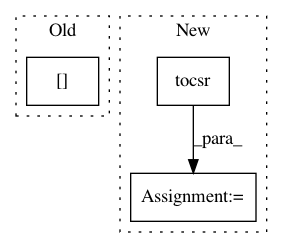

6ce049fae6ac83de1c88f2237308f315c84eb7e0,src/spn/experiments/layers/Vectorized.py,,sum_lambda,#Any#Any#,133
Before Change
maxv = np.max(x[:, idx], axis=1, keepdims=True)
np.einsum("ij,j->i", np.exp(x[:, idx] - maxv), layer.nodes[i].weights, out=ll[:, i])
np.log(ll[:, i], out=ll[:, i])
ll[:, i] += maxv[:, 0]
return ll
After Change
// return ll
for i, idx in enumerate(layer.scope_matrix):
// continue
ll[:, i] = logsumexp(x[:, idx.tocsr().indices], b=layer.nodes[i].weights, axis=1)
return ll
In pattern: SUPERPATTERN
Frequency: 3
Non-data size: 3
Instances
Project Name: SPFlow/SPFlow
Commit Name: 6ce049fae6ac83de1c88f2237308f315c84eb7e0
Time: 2020-01-29
Author: molina@cs.tu-darmstadt.de
File Name: src/spn/experiments/layers/Vectorized.py
Class Name:
Method Name: sum_lambda
Project Name: automl/auto-sklearn
Commit Name: 3842da1683baeeb426ca84d04617f84d99f8183c
Time: 2016-01-19
Author: feurerm@informatik.uni-freiburg.de
File Name: autosklearn/metalearning/metafeatures/metafeatures.py
Class Name: NumberOfInstancesWithMissingValues
Method Name: _calculate_sparse
Project Name: epfl-lts2/pygsp
Commit Name: d8e610c04662817816d5d7cb5de2578cb48f3ddb
Time: 2015-12-09
Author: lionel.martin@epfl.ch
File Name: pygsp/graphs/graph.py
Class Name: Graph
Method Name: subgraph